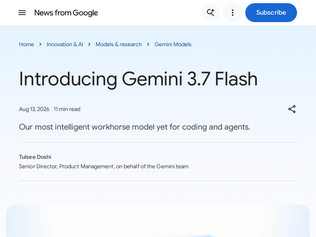
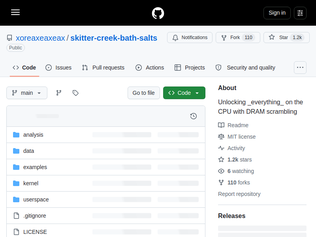
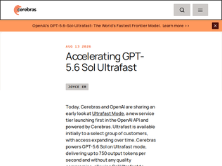
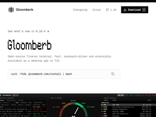
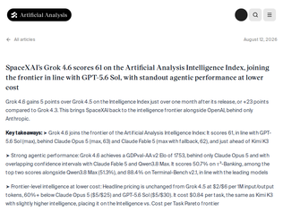
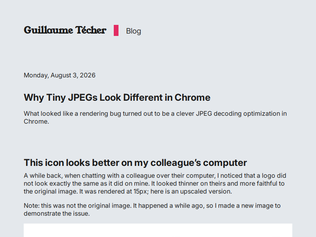

"Here's a image->html test. Gemini has always swung above its weight class for vision work, so I'm always eager to try it with this.Original images: https://image.non.io/neonRamenDesigns.webpGemini 3.7 build: https://html.non.io/neonRamenGemini3.7Opus 5 build for comparison: https://html.non.io/neonRamenOpus is still best in class for this, but it's worth noting how well Gemini 3.7 does vs a more comparable LLM price wise, which is Grok 4.6: https://html.non.io/neonRamenGrok4.6 . I thought Gemini would blow Grok out of the water (it generally has in the past), but Grok has really caught up."
"The "introductory pricing" for this 3.7 Flash model is really weird.It's scheduled to double in price on December 31, 2026, but who would anticipate still using this model five months from now? Especially since 3.6 Flash came out just three weeks ago!My first effort with default thinking level produced an ambitious pelican, let down by a flawed bicycle: https://tools.simonwillison.net/markdown-svg-renderer#url=ht...Then I ran it on high, medium and low thinking levels (oddly minimal is no longer an option, which WAS an option for 3.5 and 3.6) and got a pretty excellent pelican for the first two:https://tools.simonwillison.net/markdown-svg-renderer.html#u...UPDATE: That was in Safari, but as pointed out in the replies here the pelicans do NOT render well in Firefox or Chrome! Best guess is that's because of this invalid filter in the SVG: <filter id="shadow" x="-10%" y="-10%" width="130%" height="130%"></filter> Filters are meant to contain additional elements, not be empty: https://drafts.csswg.org/filter-effects/#FilterElement - so maybe Chrome and Firefox remove the element that references the broken filter but Safari doesn't?"
"Ever since the insane discount with GPT-5.6 Luna, not much excites me anymore. I mean just look at the benchmarks, even though Gemini 3.7 Flash performs well on the DeepSWE 1.1, Luna (Max) still performs way better. I personally have stuck to Luna (Xhigh) because its been more than enough and does not bloat up the context window too fast with reasoning tokens.https://deepswe.datacurve.ai> Starting January 1, 2027, $1.50/1M input tokens and $7.50/1M output tokens will apply.Compare this to Luna which is at $0.2/1M input ($0.02 cached) and $1.2/1M output.https://developers.openai.com/api/docs/models/gpt-5.6-luna"
"Ads are an attack, aimed at your brain. They try to inject malware into your thinking, manipulating your worldview and your actions.That's horrible, worse than attacking a machine with malware, damaging persons and societies.Decades of ad propaganda have tricked people into seeing them as something 'normal'. But we shouldn't accept being under constant attack of brain worms.I propose a sane rule for all humans: if you see an ad somewhere, or if you suspect a hidden ad ('influencers' trying to promote something), close the tab immediately and never return to that site."
"Eventually, this arms race ends with a computer vision model that looks at the screen, classifies visual elements as ads, and draws a rectangle over anything that looks like an ad.I am significantly less tolerant of ads than average people seem to be. (I think average people are making a horrible mistake about this, and are badly cognitively damaged by ads in ways they don't realize). If my choices are to look at ads or leave Facebook, I'll leave. But there are conversations people have there that I'd rather not lose access to, so... I guess I'd have to partially stick around and campaign for others to leave as well?"
"Controversial opinion:This entire thread reads like a game of cat-and-mouse. People trying to block intrusive ads, and FB reaching into the depths of code and making it nearly impossible for anyone to do so en masse.I've been there. Tried to uncheck all the boxes on their ad platform; used all manners of ad blockers, etc; used incognito mode; used Tor; etc. etc. etc.At some point, you realize that the only way to not get served ads on Facebook -- and thereby not benefit the company itself -- is to get rid of it completely. Delete your account, get off that blasted site, and enjoy some moments of peace IRL.Having been a very early adopter of FB (since ~2004), I deleted my account and am clean + sober + much happier since 2016.(Not to say that I'm completely out of the FB ecosystem. Unfortunately, my fam is still on WhatsApp... and I've been trying to convince them to migrate to Signal...)YMMV"
"Hi I'm one of the authors of DeepSeek Harness. It's just an early developer preview version we're presenting in MIT license currently. Expect lots of rough edges and compatibility-breaking changes. Any feedback and suggestions are more than welcome!"
""Every run is traceableEverything the model sees is recorded in an append-only session log: system prompts, reasoning, tool calls and results, subagent scheduling, and every context injection. In the Trajectory view, you can inspect these records by source. Resume, fork, search, and replay all operate on the same event stream."That's a killer feature, IMHO, and one that US models won't allow you to do, as their traces are encrypted, obfuscated, etc. and have to be extracted via various workarounds (that violate the terms of service).If you want to be able to improve your tools that work with models, you have to be able to assess what the models think is happening, how they think about and interact with the data you give them. And, the US models won't let you see that."
"I have read the underlying paper, and found it may be useful, but not that useful.For those who want to know what it achieves: it adds hot-reload and dynamic enable/dispose capabilities to a plugin system, like the one in Pi agents, though they push the boundaries further, to the UI components and so on.For those who want to know what it does: if you have some PLT knowledge, ask your agent to explain the algebra to you better; for those who aren't familiar, the framework requires each plugin to provide how it initializes and how it destructs (like C++'s RAII, Rust's Drop trait and so on), and the runtime will then properly handle the lifecycle events and the common pitfalls. In addition, it provides a clean way to declare the dependencies between plugins, and the runtime will also properly process the lifecycle changes on a broader plane.I think it's worth reading if you are not familiar with OSGi, iPOJO, React's useEffect and so on (which the paper itself mentions); for others, a skim is enough: it does point out the gotchas for some common problems, but the algebra may not help you further."

"I cannot wait for the accompanying Black Hat talk. Christopher Domas is one of my absolute favorite all-time hackers. He does such a fantastic job of explaining his work. Some of my favorite talks of his:- Psychological Warfare in Reverse Engineering https://www.youtube.com/watch?v=HlUe0TUHOIc- The MoVfuscator https://www.youtube.com/watch?v=R7EEoWg6Ekk- Hardware Backdoors in redacted x86 https://www.youtube.com/watch?v=jmTwlEh8L7g"
"When I started with computers, DRAM was understandable by a teenager: RAS, CAS, read, done.Ok, the necessary refresh was always a little pain, but still something manageable.Nowadays, I feel you need three PhD's to even bring up a micro with DRAM and don't get me started on the proprietary binary blobs necessary just for DRAM access. No wonder PSRAM is a thing.The corollary is that it shouldn't be too surprising that this gigantic attack surface provides many opportunities. (Of course that doesn't mean it is easy to find them, hat tip to Christopher Domas, just that I expect there to be many more)."
"This is all great to get full unfettered access to your own system, as life should be.I’m sure Xbox and PlayStation security groups are a little nervous right now though. Getting ring-0 on those machines is near impossible, but once you do then everything else becomes wide open"

"I've been waiting so long for something amazing to come out of the OpenAI and Cerebras collaboration.> In our evaluations, GPT-5.6 Sol on Ultrafast mode answered all 2,500 HLE questions in 11 hours and 11 minutes. Claude Fable 5 needed 78 hours and 27 minutes, more than three days of continuous compute, to arrive at the same conclusions. In other words, Ultrafast worked through the frontier of human knowledge in a single working day, achieving comparable accuracy nearly 7× faster.This is actually insane.Hopefully the release ultrafast of Terra and Luna too."
"People underestimate the importance of speed on quality of thought, because people underestimate just how much quality is a result of simple iteration.When an LLM thinks, it typically just makes one pass. It outputs tokens from top to bottom, beginning to end, and then it's done. But when people think, especially strong thinkers, we typically iterate and revise our thoughts on the fly. We do numerous passes. We stop and restart, we reconsider, we review, we reevaluate. Sometimes we do this so quickly and automatically that we don't even realize we're doing it. I think a lot of what separates a highly intelligent or effective person from others has less to do with the quality of their first pass and more to do with just how many additional passes they're able to do in the same amount of time, and of course what kind of criteria they're habituated to consider during their review passes.Introspecting about this is difficult, but experimenting with LLMs is easy. First, simply ask an LLM to do something complex. For example, to come up with a new business idea, or to plan the next month of your life, etc. After it finishes, tell it:"Review what you just wrote, according to some appropriate list of evaluation criteria that you come up with first. And then, based on the results, iterate and generate a better response if warranted."It's insane how much better the next answer will usually to be. Often it'll catch and erase tons of hallucinations, logical errors, and inefficiencies. And you can simply copy-paste this again and again until you begin to hit diminishing returns. Or, in a harness like Claude Code, for example, I might shortcut this whole process by saying, "Use sub-agents to iteratively review and iterate on your work until convergence."The reason why most people don't prompt LLMs to do this (besides simply not thinking of it) is that it takes time.But what if it didn't?What if the LLM's response came back in milliseconds rather than minutes? Then there would be almost no reason NOT to do this. In fact, one could almost imagine it baked into the assistant/harness -- a massive step change in practical quality, enabled by nothing more than speed."
"The corresponding OpenAI post https://openai.com/index/previewing-ultrafast/There is no pricing info, which could mean it's "if you have to ask..." territory or they are simply gauging interest before deciding"
"Interesting to see the Linux version released. On Windows, though, my experience with the new ChatGPT app since Codex was folded into it hasn't been great.I'm a Codex user, and when it was still a standalone app it worked really well for me. Since it became part of the new ChatGPT app, the app feels noticeably slower and, at least on my machine, is currently using around 1.27 GB of RAM [1].The old ChatGPT app, which has now been renamed "ChatGPT Classic", feels much faster and is using around 478 MB under the same conditions.I have a reasonably powerful PC, so the difference is pretty noticeable. I assume Classic will eventually be discontinued, but so far the transition to the new app on Windows hasn't been particularly good for me.[1] https://imgur.com/a/nQkneGL"
"From yesterday, with 26 comments: https://news.ycombinator.com/item?id=49264334"
"For someone who has not tried these desktop apps: what is the the advantage versus cli codex with some MPCs and multiple folders each one with their context files?"

"I really wish people would mention their stack when they have these curl install scripts. I'd rather use a real package manager, but I'm not totally against installing a compiled binary this way. I am, 100%, not going to install some Java/Type-script nightmare like this though. How is it resolving the dependencies? Is it installing some version of node, bun... on my machine? How's that working with other versions I have installed?Related: please don't write command line tools in non-compiled languages! Don't make the runtime your user's problem."
"Useful on its own merits.Everybody who's distracted by the name and can't get past it, there's a thread developing here somewhere, where they're comparing it to Bloomberg."
"Yeah... people aren't paying Bloomberg $31,980 per year for a TUI. They're paying for the data source... and I don't think you have Bloomberg's connections."
"The US wields incredible negotiating power and hegemony because the dollar is the world’s reserve currency. Like the British pound and the Dutch guilder before it, if that loses reserve currency status it will be harder to borrow on favorable terms, which would affect the entire US economy. This is a big step in that perhaps starting to happen over the next few decades."
"I wonder if it has anything to do with the currency apparently being backed by an immense reserve of oil (proven to the world by this year's geopolitical events), then coal, and then a massive amount of renewable solar, hydro, wind kWh's and infrastructure to deliver it to homes and shops.More and more it feels like a nation's kWh throughput is the new metric to track its global influence in manufacturing, industry, and financial services. In other words electric power now equates to global power."
"An interesting move. Something that drives me crazy when interacting with China, is that I can only use American payment methods to make a payment from Europe to China. I pay a fee and the merchant pays a fee both to the US. It just sounds broken. I hope this is a step in eventually resolving this."

"I've been using grok 4.5 with grok build soon after it came out and dropped claude. primarily for personal code. It communicates better. While that might not sound like a big deal it is. It doesn't give me a wall of text, tells me what I need to know and I'll make the actual decisions. It is very quick as well which means the sessions are far more interactive, I'll be steering it more. I sometimes cross check with codex and sol, but the daily driver is grok for me.I found it has improved my productivity and output over claude where it felt like claude was giving me work to do. furthermore with the recent claude watermarking thing, I'd rather use grok or openai.If anyone is curious download grok cli and throw a couple of prompts at it. you'll be surprised."
"Cursor, since Grok 4.5, has had an incredible deal for frontier level models, their subscription now goes way further than OpenAI or Anthropic. Even on their lower tier plans you can use a lot tokens on their of their first party models (Grok and Composer) and not really run out comparatively. Combine them with an orchestrator and implementor type setup and it goes even further."
"SpaceXAI is the only frontier model company that had its own compute/date centres and soon chip making factory, I think they will pull ahead with cheaper tokens similar intelligence and better harness/tools. Grok build is 2-5x faster than Claude Code in my opinion."

"I'm pretty sure the same issue happens with PNGs, which being lossless are generally good for icons as they don't land up with compression artifacts like what happens in JPEGs (which the author points out are really for photographs), they also support alpha blending.When Chrome introduced this "optimization" and it made it through to an Electron release which we were upgrading to, it really messed up the icons in a lot of places in our product such that we had to hold off the upgrade until we had SVGs to replace them.SVGs also have the advantage of being able to respond to light/dark mode. We just needed to put each icon in its own shadow DOM to avoid styles clashing between the different SVGs if they happen to be named the same which was a bit of an annoyance for our graphic designer."
"> Really, the moral here is that you should not use JPEG for icons and the likeAnd, more importantly, you should use images that are an appropriate resolution for the size they will be displayed. Even if you switch to PNG, using a 2000x2000 image for a icon displayed 20x20 is a waste."
"The work for decompressing at a lower scale in Firefox is happening here: https://bugzilla.mozilla.org/show_bug.cgi?id=2033250"
Gemini 3.7 Flash
"Here's a image->html test. Gemini has always swung above its weight class for vision work, so I'm always eager to try it with this.Original images: https://image.non.io/neonRamenDesigns.webpGemini 3.7 build: https://html.non.io/neonRamenGemini3.7Opus 5 build for comparison: https://html.non.io/neonRamenOpus is still best in class for this, but it's worth noting how well Gemini 3.7 does vs a more comparable LLM price wise, which is Grok 4.6: https://html.non.io/neonRamenGrok4.6 . I thought Gemini would blow Grok out of the water (it generally has in the past), but Grok has really caught up."
"The "introductory pricing" for this 3.7 Flash model is really weird.It's scheduled to double in price on December 31, 2026, but who would anticipate still using this model five months from now? Especially since 3.6 Flash came out just three weeks ago!My first effort with default thinking level produced an ambitious pelican, let down by a flawed bicycle: https://tools.simonwillison.net/markdown-svg-renderer#url=ht...Then I ran it on high, medium and low thinking levels (oddly minimal is no longer an option, which WAS an option for 3.5 and 3.6) and got a pretty excellent pelican for the first two:https://tools.simonwillison.net/markdown-svg-renderer.html#u...UPDATE: That was in Safari, but as pointed out in the replies here the pelicans do NOT render well in Firefox or Chrome! Best guess is that's because of this invalid filter in the SVG: <filter id="shadow" x="-10%" y="-10%" width="130%" height="130%"></filter> Filters are meant to contain additional elements, not be empty: https://drafts.csswg.org/filter-effects/#FilterElement - so maybe Chrome and Firefox remove the element that references the broken filter but Safari doesn't?"
"Ever since the insane discount with GPT-5.6 Luna, not much excites me anymore. I mean just look at the benchmarks, even though Gemini 3.7 Flash performs well on the DeepSWE 1.1, Luna (Max) still performs way better. I personally have stuck to Luna (Xhigh) because its been more than enough and does not bloat up the context window too fast with reasoning tokens.https://deepswe.datacurve.ai> Starting January 1, 2027, $1.50/1M input tokens and $7.50/1M output tokens will apply.Compare this to Luna which is at $0.2/1M input ($0.02 cached) and $1.2/1M output.https://developers.openai.com/api/docs/models/gpt-5.6-luna"